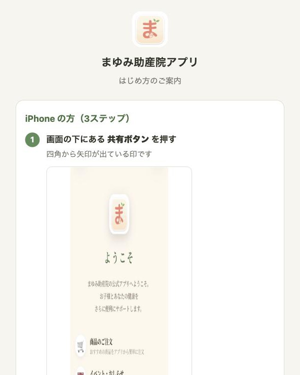

ホーム画面への追加のしかた
iPhoneSafari で開いたときの手順です
1 / 3
アプリは、スマートフォンのホーム画面にアイコンを追加してお使いいただきます。
QRコードを読み取ると「はじめ方」の画面が出るので、そこから始めます。
追加が終わるまで、登録はしないでください。
1
QRを読み取ると、この画面が出ます
iPhone の手順だけが表示されます。ここではまだ何も入力しません。

2
画面の下の「共有ボタン」を押す
四角から上に矢印が出ている印です。Safari の画面のいちばん下、中央にあります。
iPhoneの写真をここに
Safariではじめ方の画面を開き、
下に共有ボタンが見えている状態
下に共有ボタンが見えている状態
3
「ホーム画面に追加」を選ぶ
メニューが出るので、少し下にスクロールします。「ホーム画面に追加」が出たら押します。
iPhoneの写真をここに
共有メニューで
「ホーム画面に追加」が見えている状態
「ホーム画面に追加」が見えている状態
4
右上の「追加」を押す
名前は「まゆみ助産院」と入っています。そのまま「追加」で構いません。
はじめに緑の「ま」が出たら、本来の絵に変わるまで少し待ってから押してください。
はじめに緑の「ま」が出たら、本来の絵に変わるまで少し待ってから押してください。
iPhoneの写真をここに
「ホーム画面に追加」の確認画面
（右上に「追加」がある画面）
（右上に「追加」がある画面）
5
ホーム画面にアイコンができます
「ま」の絵のアイコンです。これからは、必ずこのアイコンから開いてください。Safari から開くと、記録が分かれることがあります。
iPhoneの写真をここに
ホーム画面に「まゆみ助産院」の
アイコンができた状態
アイコンができた状態
「ホーム画面に追加」が出ないとき
LINE の中で開いていると出ません。画面のすみの「…」から「Safariで開く」を選び、Safari で開き直してから②へ。
Chrome など Safari 以外のブラウザでも出ません。同じく Safari で開き直してください。
まゆみ助産院1 / 3